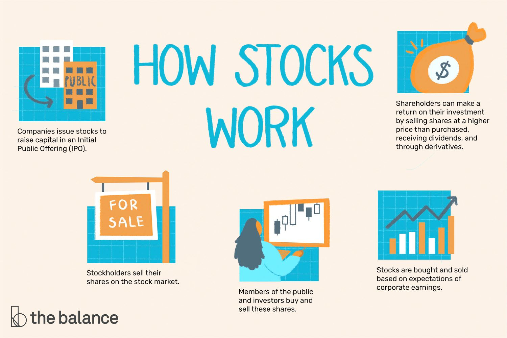

Explaining how the stock market works can get all messy and confusing because of the complexity, but also all the factors that exists in the world that manipulates how the stock market works, and how its supposed to work.
On this page of the website, i will explain to you in the simplest way possible how the stock market works and all the little things that determines how it works.

The stock market essentially is a marketplace where the stocks of publicly traded companies are being bought and sold. These stocks represent ownership of a certain percentage in the company, and the price of the stock goes through different changes in price based on the supply and demand for the stock. When a company initially goes public, it offers a certain amount of shares to the public in an initial public offering (IPO). After the IPO, the shares can be traded on a stock exchange.
Investors can buy and sell shares on the stock market through a brokerage account (account that holds financial assets of an individual). The price of a stock is determined by the supply and demand. When more people want to buy a stock than sell it, the price goes up. When more people want to sell a stock than buy it, the price goes down. The change or fluctuation in price of a stock is affected by a variety of factors, including the company's financial performance, overall market conditions, and investors's decisions.
In the simplest way possible, mutual funds are essentially a basket that holds multiple different stocks. So it allows you to get a small percentage of a bunch of compagnies by just investing your money into one stock exchange instead of buying all of them individually. Mutual funds are a very popular choice, because of how they work. Its extremly hard to lose money when investing into them while still being able to passively profit. An example of a mutual fund is the S&P 500 which is a bond that holds the top 500 stocks in the world that has a great reputation in terms of annual return in the past 10 years and is used as a comparison with other stocks to determine certain outcomes.
Theres a bunch of different types of stocks that exist but to keep this page simple i will only cover and explain the 5 most common ones.
Most stock that people invest in is common stock.
Commmon stock represents partial ownership of a company, with shareholders getting the right to recieve a small percentage share of the value of any remaning assets if the commpany gets dissolved for whatever reason.
Commmon stock gives shareholders unlimited upside potential but also at the risk of losing everything if something happens to the company.
Prefered stock essentially gives shareholders a priority over common shareholders to get back a certain amount of money if the company disolves.
Preferred sharehollders also have the right to recieve dividend payments before common shareholders do.
Stocks also get categorized by the total worth of all their shares, which is called market capitalization.
Companies with the biggest market capitalizations are called large-cap stocks, with midcap and small-cap stocks representing smaller companies.
Stocks with market capitalizations of $10 billion or more are treated as large-caps, stocks having market caps between $2 billion and $10 billion are classified as mid-caps and stocks with market caps below $2 billion are considered small-cap stocks.
Large-cap stocks are generally considered safer investments since they have been on the market for a while, while mid caps and small caps have greater potential for future growth but are riskier as they could completely crumble.